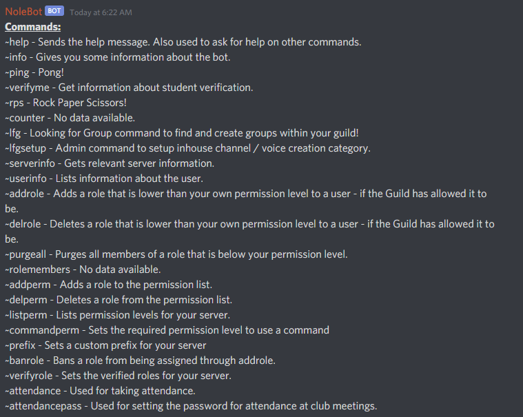
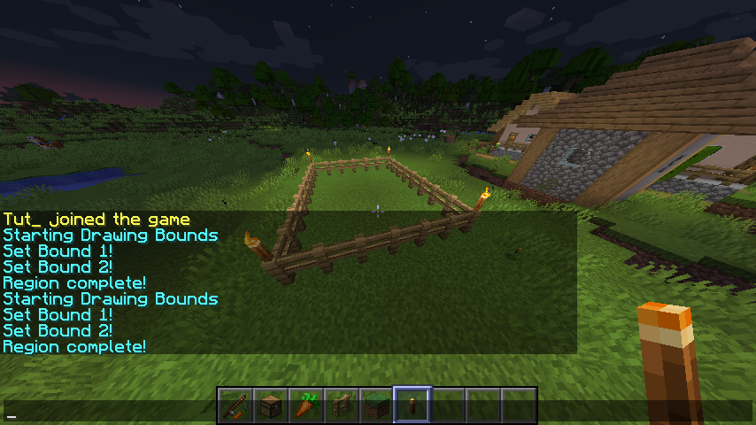
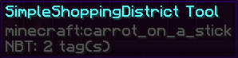
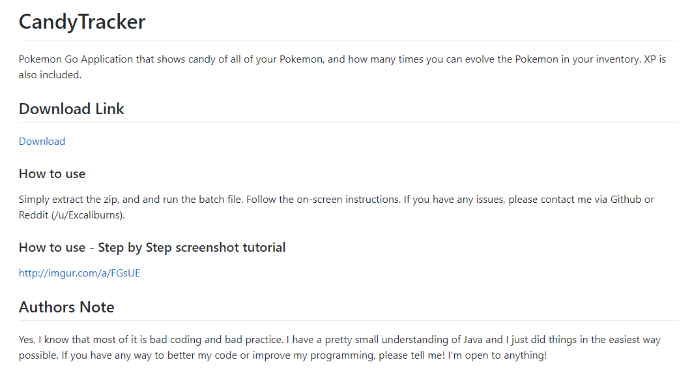

Portfolio
NoleBot
Developed a Bot user for Discord, a chat and voice communication program mainly used by gamers
Allowed for fine tuning of user permissions, much more than what Discord originally provides.
Made for easier student verification for our gaming team leaders
Built with Java and the Discord API
Written with an extensive Git history
Check out NoleBot in action on the Esports at Florida State Discord!

SimpleShoppingDistrict
Integrated Minecraft Plugin with the Spigot API
Assigned user-defined "shop" areas based on admin selection using vectors
Full CRUD integration and caching implementation in Java with JDBC


CandyTracker
Used to track "Candy" in Pokemon Go, a resource in the game that is not easily accessed
Gave users input about these Candies, and how they could be used

LoLTracker
Currently In development
Interfaces with the Riot Games API using a third party wrapper for the Riot API, Orianna
Easily customizable Riot API interface for personal use
Grew understanding of API endpoints and API requests